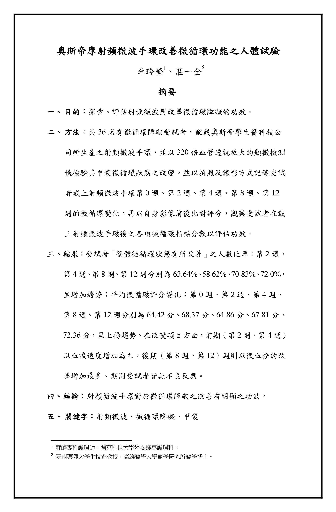

About Oxygener
"The Bio-ElectroMagnetic field" is one of the most important researches in physiology today, is one of the most important researches in physiology today,
“生物電磁場”是當今最重要的生理學研究之一，
Whose principium is similar with the theory “Blood is leaded by Qi” in traditional Chinese medicine.
它與中醫「氣以行血」的見解有所相通，
Wish this new bio-technology,
希望此一新生物科技，
Will improve health and bring you happiness.
能幫助您改善健康、帶來幸福。
「缺氧-Hypoxia」是亞健康及多種慢性病的重要成因，因生活型態及調適負荷(Allostatic Load)過高，都會人口平均50%以上有不同程度的缺氧問題。
缺氧時，細胞粒線體合成能量分子ATP的電子傳遞鍊，因缺乏足夠的氧原子結合溢散的游離電子，導致大量活性氧自由基，不僅會對細胞、基因造成傷害，缺乏能量也會誘發例如提高血壓、血醣等代償作用，造成組織「代謝毒素增加、能源消耗增加、可用能量缺乏」三大不利因子，進而造成「熱、溼、寒」的缺氧體質，是亞健康及多種慢性疾病的重要病灶。
忽視缺氧根本成因，一味依賴藥物控制指數，不但無益於患者，還將造成肝腎損傷使病情加劇。
奧斯帝摩優氧循環
- 1. 缺氧檢驗
精準醫療：環境、呼吸、造血、循環‧‧‧，全面檢驗找出缺氧原因。 - 2. 個人化改善方案
精確打擊：分析檢驗結果，診斷缺氧程度，提供個人化改善方案。 - 3. 落實方案
健康促進：培養自控能力，落實改善方案，調整缺氧的生活型態。
只需簡單依序前進，便可逐步循環而上；落實優氧循環，便可「持續改善缺氧、獲得真正健康」。
高壓氧、鍺鈦手環、遠紅外線、補氣補血的保健品，乃至於奧斯帝摩的射頻微波IC晶片…，越來越多的醫師、民眾了解改善缺氧的重要，但該如何選擇？又該如何避免復發？
我們必須超越產品的層次，進入行為的科學。奧斯帝摩認為，若能遵循以下『優氧循環』三步驟，就能快速、安全、經濟的改善缺氧：

那要如何落實優氧循環呢？奧斯帝摩提供了服務、產品與工具。
壹、優氧循環的服務：
1. 全面缺氧檢驗
針對缺氧時「呼吸障礙、能量匱乏、毒性增加、耗能增加、機能下降」五大致病因子進行「供給、耗損、熱性、溼性、寒性」等檢驗，精準的掌握缺氧的成因、體質與症狀。
2. 設計個人化改善方案
依檢驗結果，診斷、設計「供給治療、耗損治療、代謝治療、微循環治療、機能復甦」等五大療程的比重，精準對應不同種類、程度致病因子，以達最佳效果。
3. 教練課程
半途而廢、一曝十寒？美國心理學協會研究指出，「缺乏自控力」是人們獲得成功最大阻礙。醫學研究指出，不良的生活型態是亞健康及慢性病的重要成因，奧斯帝摩的「自控力課程」、「優氧體適能」教練，能協助並陪伴我們強化自主健康管理，落實方案，改善缺氧的生活型態。
貳、優氧循環的產品
優氧循環包含「供給治療、耗損治療、代謝治療、微循環治療、機能復甦」五大療程。目前已經完成並通過三年長期測試穩定的產品為：
1. 優氧手環 ─ 調節神經、活絡血脈
2. 優氧益生盾 NT 1,500 ─ 強化核心機能、抵抗環境壓力
3. 優氧人蔘錠 NT 1,575 ─ 補充神經營養、幫助機能復甦
參、優氧循環的線上工具平台
奧斯帝摩利用雲端科技及大數據，開發出「優氧專家」、「自控力」兩套線上系統，讓所有人都能即時、便利進行優氧循環，從而持續改善缺氧、獲得真正健康。

奧斯帝摩優氧手環

奧斯帝摩優氧手環係以現代電子科技所製造，相較於一般磁石、鍺、鈦產品，或者是用於改善血液循環的食品、藥品，它具有以下優點：
- 精準安全的微波頻率
並非所有頻率的微波皆有益於人體，僅少數是有益的。微波積體電路內所燒錄的特定電磁程式，讓奧斯帝摩優氧手環只發射那些有益的微波，而無其他不需要的頻率。
- 更強更持久的能量輸出
由於奧斯帝摩優氧手環不但能自外界吸收電源，更只集中於發射有效的頻率，因此所輸出的能量是一般產品的十倍甚至數十倍以上。
一般元素也會面臨氧化或能量耗竭的問題，奧斯帝摩優氧手環則將核心晶片密封，能擁有五年以上、甚至更長的使用壽命。 - 全身性的效果
遠紅外線類產品，其作用範圍以配帶部位為主；奧斯帝摩優氧手環能作用於自律神經，效果及於全身，不限於所配帶之部位。 - 最高的安全等級
不同於藥物的化學反應可能造成副作用，奧斯帝摩優氧手環是物理性作用的產品。此外，它的磁波強度遠低於國家安全上限，不會對身體產生負面效果。

當我們配帶奧斯帝摩優氧手環時，生物電磁晶片(BEM Chip)中的天線電路則能接收這些外界的電磁波，並運用無線充電技術將之轉換為穩定的電流，趨動晶片內的射頻積體電路(RF IC)。
射頻積體電路(RF IC)在得到電能供應後，便依IC內部的程式，製造能作用於自律神經的射頻微波。因此，奧斯帝摩優氧手環不需要額外充電，即能持續的、高能量的運作。
Contact Oxygener
若您針對本公司服務與產品想更進一步的了解，竭誠歡迎您與我們聯絡，
能夠為您提供更好的服務品質與樂活人生，是我們衷心想望的事。
請您於週一至週五，上午十點半至下午五點半，致電(06)2979-053，與我們聯繫。
電子郵件： service@oxygener.com
台灣地址：台南市安平區永華三街333號3樓